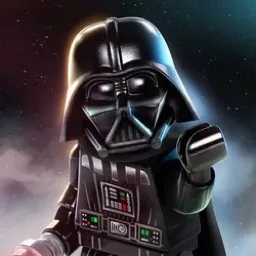

MEET OUR TEAM

Jefferson Rebel
Chief of Police
Leading the department with years of experience.

D. Cooper
Police Major
I'm the Police Major with Avalon PD. I oversee multiple divisions, coordinate department-wide operations, and ensure our long-term strategies keep this city safe.
That_guy
Police Captain
I'm a Captain with Avalon PD. I manage day-to-day operations within my division, lead our officers on the ground, and make sure our team runs smoothly and effectively.